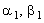

|
2.3. Определение прогоночных коэффициентов на 1-м шаге по координате
Для определения прогоночных коэффициентов на 1-м шаге по координате х, т.е. , используют рекуррентное прогоночное соотношение (4.11), записанное для j = 1:
Обратим внимание, что вместо граничных условий 1-го рода (4.5) могут быть заданы граничные условия 2-го или 3-го рода; методика определения при этом не изменится, хотя сами формулы для расчёта будут другими. Пусть задано левое граничное условие 2-го рода: Пусть задано левое граничное условие 3-го рода: |